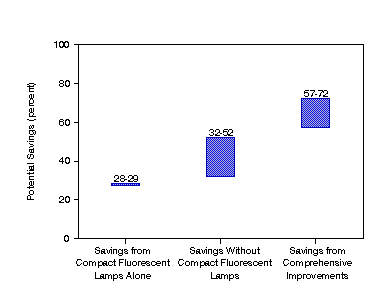
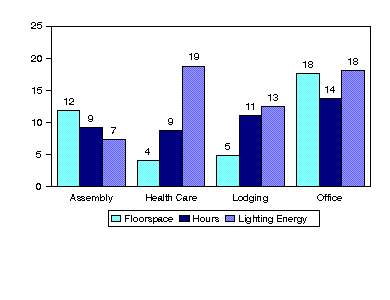
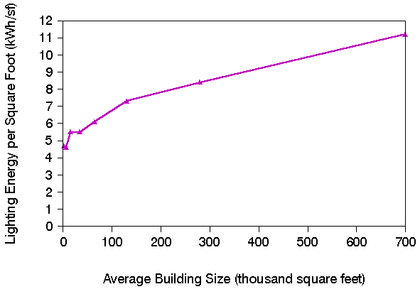

Home > Commercial Buildings Home > 1986 Lighting in Commercial Buildings > Executive Summary
|
|
|
Home > Commercial Buildings Home > 1986 Lighting in Commercial Buildings > Executive Summary |
Executive SummaryLighting represents a substantial fraction of commercial electricity consumption. A wide range of initiatives in the Department of Energy's (DOE) National Energy Strategy have focused on commercial lighting as a potential source of energy conservation. This report provides a statistical profile of commercial lighting, to examine the potential for lighting energy conservation in commercial buildings. The principal conclusion from this analysis is that energy use for lighting could be reduced by as much as a factor of four using currently available technology. The analysis is based primarily on the Energy Information Administration's(EIA) 1986 Commercial Buildings Energy Consumption Survey (CBECS). The more recent 1989 survey had less detail on lighting, for budget reasons. While changes have occurred in the commercial building stock since 1986, the relationships identified by this analysis are expected to remain generally valid. In addition, the analytic approach developed here can be applied to the data that will be collected in the 1992 CBECS.
Lighting Energy Conservation PotentialSubstantial energy savings are possible using more efficient commercial lighting equipment and practice. Estimates of the potential savings depend heavily on assumptions regarding the types of lamps and fixtures to be replaced, the effectiveness of various lighting conservation measures, and how strong a lighting level is to be maintained. The savings estimates under various assumptions span a wide range, from under 30 percent to nearly 80 percent of current use (Figure ES1).

Note: Each shaded band indicates the range
of savings
estimates obtained, under varying assumptions for the effectiveness of the conservation features
considered for each case. The potential savings are shown for each case as a percent of the base
case lighting energy estimate (321 billion kilowatthours). Additional savings are possible if
lighting levels are reduced. The savings analysis spans a range of plausible assumptions. Nonetheless, other modifications to equipment and practice could be considered, and other assumptions for the effectiveness of these might be more appropriate. This report presents a framework that allows alternate savings estimates under alternate assumptions.
These savings estimates are based on the use of current commercially available technologies
and assume that all lights of a given type are replaced immediately. Actual replacements would,
of course, occur over time as the new lighting equipment penetrates the marketplace and
associated costs are reduced as the technology improves. Indeed, in all likelihood some of the
potential savings have already been achieved, through increased penetration of energy-efficient
equipment since the time of the survey the analysis is based on. Thus, the savings estimates are
provided only to describe the potential for savings and are not a prediction of the level of savings
that will be realized in the marketplace.
Commercial Lighting Energy ProfileThe potential for commercial lighting energy conservation is derived from a statistical profile developed in this report of commercial lighting energy. This profile reveals important relationships among lighting energy use and building characteristics including activity, building size, operating hours, and lighting equipment.
 Note: For each principal building activity, the percents are the estimated amounts for the activity as percentages of the total commercial lighted floorspace (49.59 billion square feet), lighted floorspace-hours (3.5 trillion square foot-hours), and lighting energy (321.4 billion kilowatthours).

Note: Average quantities for each size category
are plotted at a
horizontal position corresponding to the average size for buildings in that category.
Data and Research NeedsThis study was performed using the 1986 CBECS data, because the more recent 1989 CBECS had less detail on lighting equipment and conservation features. Extending the methods used here to other survey years would therefore require further assumptions and approximations. However, more detailed lighting questions will be restored for the 1992 cycle. The analysis can be repeated directly with the more up-to-date data when they become available. In addition, the 1992 CBECS sample will be a revisit to the 1986 sample, allowing longitudinal comparisons over the past six years. Several extensions to this analysis could be made. One would be to reconcile the energy estimates with total building electricity consumption. Another would be to incorporate assumptions about the degradation of equipment efficiency over time. The CBECS data also contain complete weekly operating schedules; together with the estimates obtained here for in-use lighting power densities, these schedules could serve as the basis for estimation of lighting load shapes. Additionally, the results developed here can be combined with economic equipment assessments to provide estimates of the costs associated with the conservation strategies. As part of the Lighting Initiative sponsored by the Office of Conservation and Renewable Energy, economic analysis of different lighting options is currently being conducted by Lawrence Berkeley Laboratory. Results from this report may be linked to that work.
URL: http://www.eia.gov/consumption/commercial/data/archive/cbecs/cbecs2f.html

|